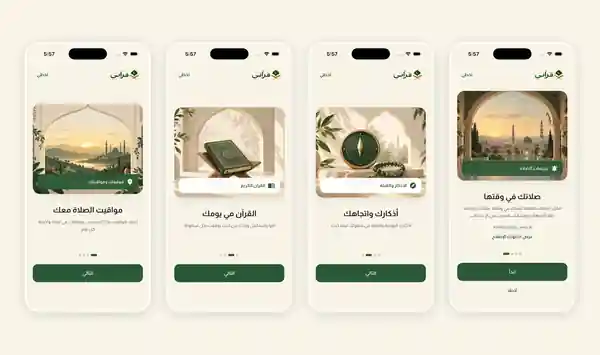
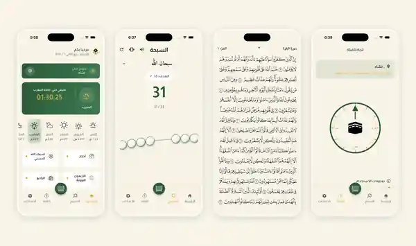

Everyday purpose
Bring the essential daily worship tools together, with prayer timing and location context available at a glance.
PERSONAL FLUTTER PROJECT · ISLAMIC COMPANION
A thoughtful Arabic-first Islamic companion bringing prayer times, Quran reading, daily adhkar, tasbih and Qibla guidance into one calm Flutter experience.
These are the current application screens supplied for this showcase — no old mint-theme captures are used here.


Bring the essential daily worship tools together, with prayer timing and location context available at a glance.
Prayer countdown and timings, Quran reading, daily adhkar, tasbih counter, Qibla compass and an Arabic-first onboarding flow.
A calm emerald, gold and cream visual identity with clear Arabic hierarchy and quick access to repeated daily actions.